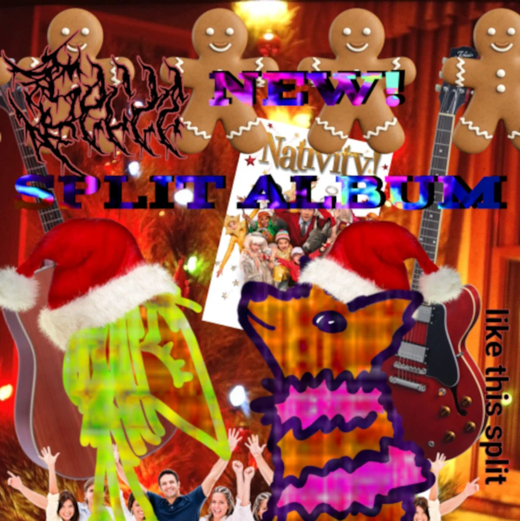

Mighty Old Redwood / 🦊 ~ Mighty Old Redwood / 🦊
Catalog number: BM7CM
Date released: 2025.12.19
Tracks: 2
Total runtime: 23:48
Released on: Digital, Cassette
Total copies: 6 [4 remaining]
Pricing: £0 Digital; £6 Cassette
Artist links [MOR]: [RateYourMusic] [Discogs]
Artist links [🦊]: [RateYourMusic] [Discogs]
Album links: [Bandcamp] [RateYourMusic] [Discogs]
Gallery
{kind=link}
{kind=link}
{kind=link}
Description
Silver Dove and Mighty Old Redwood split??? YES PLEASE this is such an awesome split... pleasure to release this one...
Mighty Old Redwood's side is a sort of lofi free folk drone-ish piece somewhat reminiscent of Tuluum Shimmering, which makes for a really lovely and warm feel to this track really lovely and soft..
🦊's side uses more long drawn out tones and focuses more on the ambient side, although still involves the gentle use of a guitar towards the beginning.. feels more like a song to listen to outside when its cold which is some really nice contrast its a very pretty track,
Many MANY thanks to MOR and 🦊 for working with BMCM to produce this :))) if you want to find more of their work you can find their work here;
Mighty Old Redwood: generalofkhiman.neocities.org
🦊: silverdove.bandcamp.com
foxmusicawesome.neocities.org
Physical description
Recycled ~c60 cassette in a (sometimes) clear case and a standard 3 panel j card, printed on high quality 250gsm paper, album repeats on both sides.
HUGE thanks to Mighty Old Redwood and Silver Dove for working with BMCM to help produce this cassette!!! MOR's website is here generalofkhiman.neocities.org and Silver Dove's label site is here foxmusicawesome.neocities.org :D